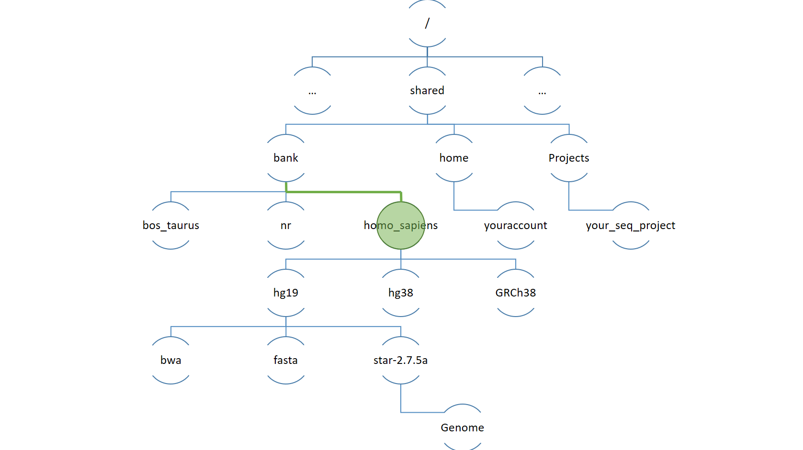

Arborescence de fichiers
Contents
Arborescence de fichiers#
L’arborescence du système de fichier#
Le système de fichier peut être vu comme un arbre dont les feuilles sont des dossiers et fichiers. On peut se déplacer dans cet arbre.
Cet arbre contient une racine, le dossier
/Le dossier
/contient notammentun dossier
shared*qui lui même contient un dossier
bankqui lui même contient un dossier
homo_sapiens…
Chemin du dossier
/shared/bank/homo_sapiens
Faire référence à un dossier ou fichier ?#
En spécifiant un chemin depuis la racine.
On parle de chemin absolu

cd /shared/bank/homo_sapiens
pwd
/shared/bank/homo_sapiens
En spécifiant un chemin depuis le répertoire courant.
Le répertoire courant est celui dans lequel l’utilisateur se trouve à un instant t.
Le chemin sera relatif au répertoire courant.
# Depuis homo_sapiens on peut aller dans hg19 puis star
cd hg19/star-2.7.5a
pwd
# ou cd ./hg19/star-2.7.5a
# Avec “.” pour signifie “le répertoire
# courant”.
/shared/bank/homo_sapiens/hg19/star-2.7.5a
# le répertoire précédent
cd ..
pwd
/shared/bank/homo_sapiens/hg19
cd ./star-2.7.5a
pwd
/shared/bank/homo_sapiens/hg19/star-2.7.5a

cd /shared/bank/homo_sapiens
# List directories only
tree -d
.
├── GRCh37
│ ├── bowtie2
│ ├── bwa
│ ├── fasta
│ ├── gff
│ ├── picard
│ ├── snpeff
│ ├── star -> star-2.7.2b
│ ├── star-2.6
│ ├── star-2.7.2b
│ └── star-2.7.5a
├── GRCh38
│ ├── bwa
│ ├── fasta
│ ├── gff3
│ ├── gnomad
│ │ ├── 2.1
│ │ │ ├── exomes
│ │ │ └── genomes
│ │ └── 3.0
│ │ └── genomes
│ ├── gtf
│ ├── star -> star-2.6.1a
│ ├── star-2.6.1a
│ ├── star-2.7.5a
│ └── trinity
│ ├── __chkpts
│ └── ref_genome.fa.star.idx
├── hg19
│ ├── bowtie
│ ├── bowtie2
│ ├── bwa
│ ├── fasta
│ ├── gtf
│ ├── hisat2
│ ├── picard
│ ├── snpeff
│ │ └── hg19
│ ├── star-2.6
│ ├── star-2.7.2b
│ └── star-2.7.5a
└── hg38
├── bmtool
├── bowtie2
├── fasta
├── hisat2
├── srprism
├── star-2.6
├── star-2.7.2b
└── star-2.7.5a
50 directories

Autocompletion#
Si vous voulez briller en société ou en famille en donnant l’impression de taper vite, utilisez l’auto-complétion
De manière plus générale c’est essentiel pour taper un chemin sans se tromper.
E.g. Aller dans le répertoire
/usr/local/bin
Vous n’avez pas fini d’entendre <TAB><TAB>

L’arborescence: Demo#
On utilise ci-dessous la commande pwd (print working directory) et la commande cd (change directory). *
# On se déplace dans le dossier star
cd /shared/bank/homo_sapiens/hg38/star-2.7.5a/
# On imprime le chemin vers le répertoire courant
pwd
/shared/bank/homo_sapiens/hg38/star-2.7.5a
# On remonte d'un répertoire (hg38)
cd ..
pwd
/shared/bank/homo_sapiens/hg38
# On se déplace dans le dossier bank
cd ../..
pwd
/shared/bank
# On se retrouve 1 cran plus haut puis projects
cd ../projects
# On voit le contenu du dossier "projects"
ls
[...]
form_2022_32
[...]
# On voit le contenu du répertoire courant "."
ls .
[...]
form_2022_32
[...]
# Aller dans uniprot_swissprot
# cd ../b<TAB>/u<TAB><TAB><TAB>p<TAB><TAB>_<TAB>
cd ../bank/uniprot_swissprot
pwd
/shared/bank/uniprot_swissprot
Utilisez la complétion pour les noms les noms de fichier (touche
L’arborescence quelques astuces#
Si vous êtes l’utilisateur cnorris. Le dossier qui stocke vos documents est par défaut /shared/home/cnorris *
ie. ‘dossier utilisateur’ ou dossier home.
Il est symbolisé par
~(tilde).AltGr + 2(PC) ouAlt + n + espace(OSX)
* Remplacez cnorris par votre login
# votre login
whoami
tdenecker
# On est à la racine
cd /
# /
pwd
/
# On liste le contenu du home
ls ~
demo divers
# On crée un répertoire ‘tmp’ dans le home (make directory)
mkdir ~/tmp
# On se déplace dans le dossier tmp nouvellement créé
cd ~/tmp
# Equivalent de cd ~
cd
# n’est pas la même chose que ~/tmp, il est vidé automatiquement
cd /tmp